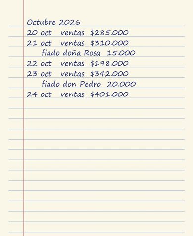
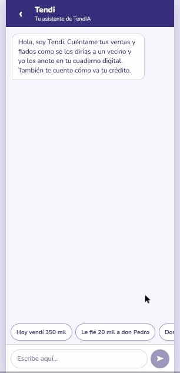

Tendi y Mi cuaderno
Le tomas una foto a la hoja y Claude la lee. O se lo cuentas a Tendi por chat o por WhatsApp: «hoy vendí 200 mil y le fié 15 mil a doña Rosa».

| Fecha | Ventas | Fiados |
|---|---|---|
| 20 oct | $285.000 | — |
| 21 oct | $310.000 | doña Rosa $15.000 |
| 22 oct | $198.000 | — |
| 23 oct | $342.000 | don Pedro $20.000 |
| 24 oct | $401.000 | — |
Así la leyó Claude
Nada se guarda hasta que tú lo confirmas o lo corriges. Sin IA, también puedes anotar a mano.
